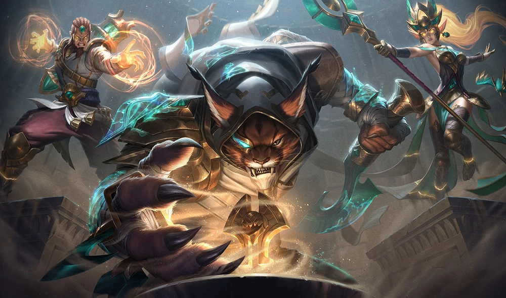
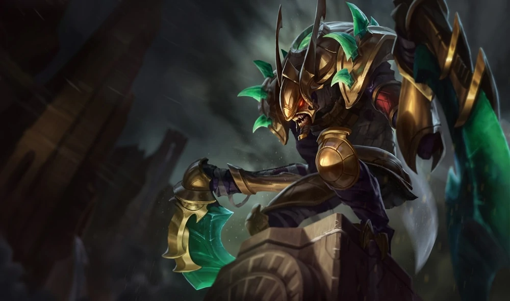
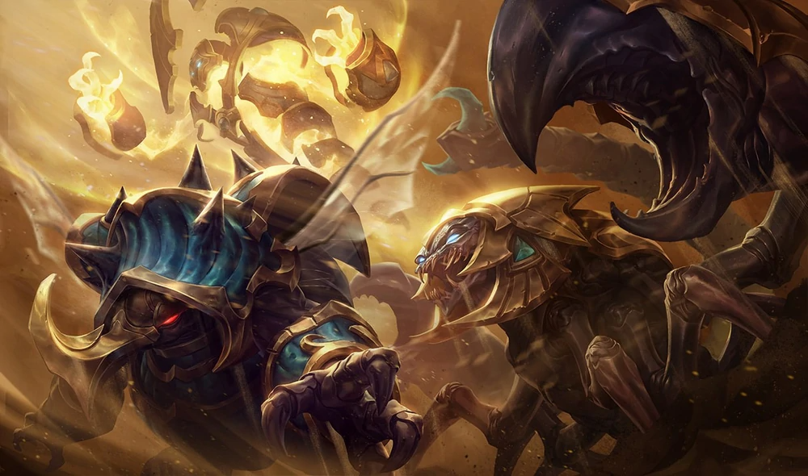
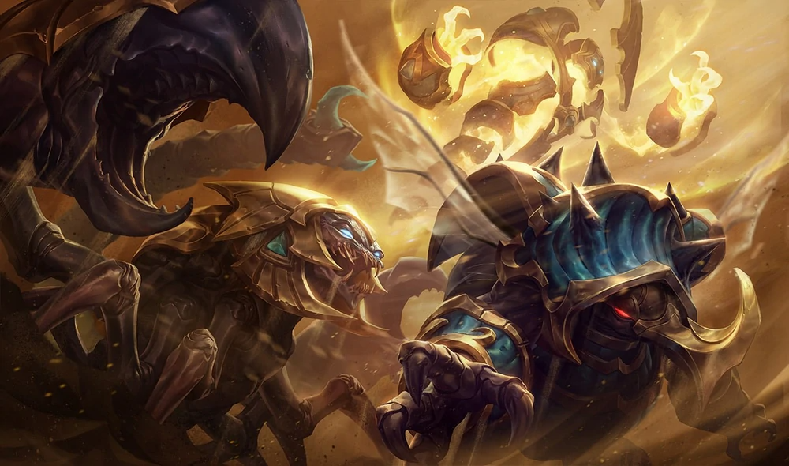
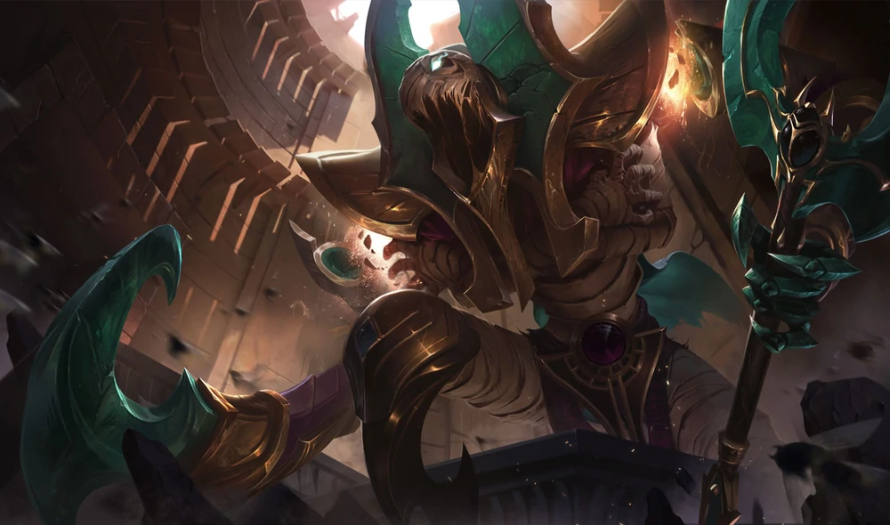
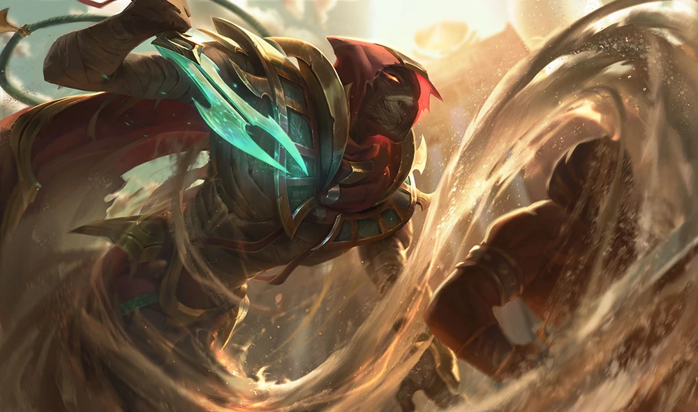
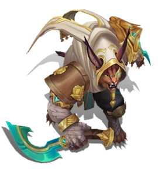
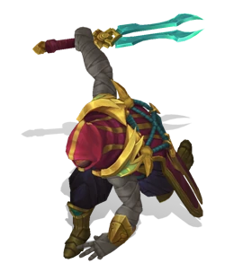

Guardian of the Sands
Guardians of the Sand is a series of alternate future/universe skins in League of Legends. Set in an alternate Shurima, all of the champions are ancient tomb guardians and evil spirits of the desert.











Guardian of the Sands Janna
Janna, the desert gale—ancient guardian of the sands, we invoke thee to protect us from an evil of our own making. Let no man tread upon these hallowed grounds, lest your sandstorms consume them whole.Guardian of the Sands Kha'Zix
Kha'Zix, the devouring scarab—ancient guardian of the sands, we invoke thee to protect us from an evil of our own making. Let no man tread upon these hallowed grounds, lest you consume them utterly.
Guardian of the Sands Rammus
Rammus, the skewering wheel—ancient guardian of the sands, we invoke thee to protect us from an evil of our own making. Let no man tread upon these hallowed grounds, lest they be broken beneath your unforgiving carapace.
Guardian of the Sands Ryze
Ryze, the eternal conservator—ancient guardian of the sands, we invoke thee to protect us from an evil of our own making. Let no man tread upon these hallowed grounds, lest your righteous magic entomb them beneath the dunes.Guardian of the Sands Skarner
Skarner, the gilded scorpion—ancient guardian of the sands, we invoke thee to protect us from an evil of our own making. Let no man tread upon these hallowed grounds, lest in your rage they are torn asunder.Guardian of the Sands Xerath
Xerath, the liquid light—ancient guardian of the sands, we invoke thee to protect us from an evil of our own making. Let no man tread upon these hallowed grounds, lest you drown them in your purifying radiance.Risen Fiddlesticks
Once upon a time in a faraway land, a jealous young emperor invoked profane summoning rites in exchange for power. Yet when the ancient horror Fiddlesticks stepped forth, it did not aid the boy--and in an instant, his empire was utterly destroyed. The fiend was trapped beneath the ruins… until now.Sand Wraith Pyke
The vengeful ghost of an ancient caravan master betrayed by his guards, Pyke now lurks within the golden halls of the desert's remaining city-states. He hunts anyone and everyone who attracts his gaze, claiming they all condemned him to death.
Guardian of the Sands Rengar
An assassin of a forgotten order long thought dead, Rengar prowls the tombs, retrieving ancient relics of power for purposes unknown. Far more alarming, he appears to be hunting guardians, his blades enchanted to pierce their ancient magic and defenses…